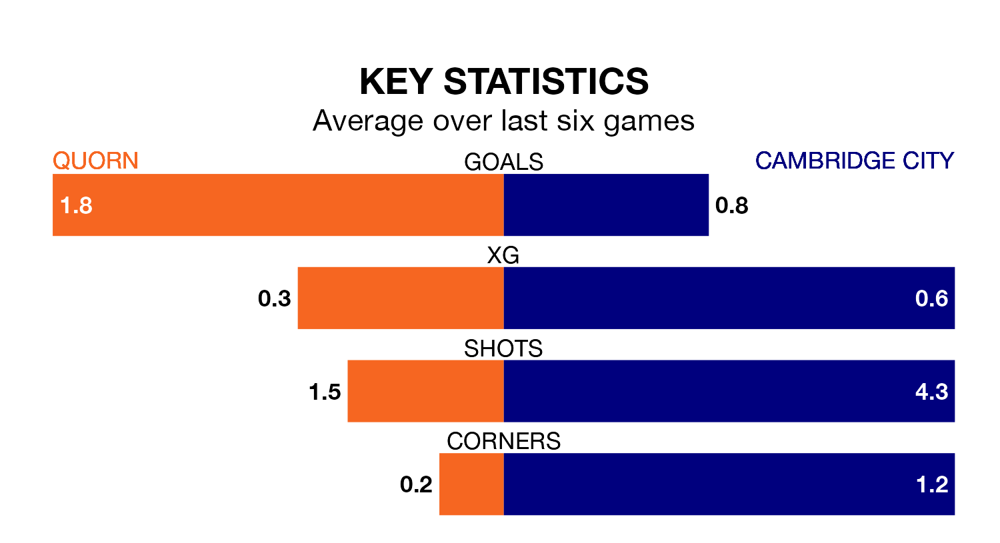

Quorn host Cambridge City on Saturday at Sutton Park in Northern Premier League Division One Midlands.
In their last league match, on January 6, Quorn lost to Boldmere St. Michaels 3-0 away.
Cambridge also lost, 4-3 at home against Loughborough Dynamo on Sunday.
With 25 goals in 22 games so far this season, Cambridge are scoring at below the league average rate with 1.1 goals per game. And they are conceding more than average, letting in 37 goals at a rate of 1.7 per game.
Quorn, meanwhile, are above average scorers, with 1.9 goals per game, compared to a league average of 1.5. They have conceded 1.5 goals per game.
City are 16th in the table after 22 games, of which they have won five and drawn five, earning 20 points.
The hosts are six places ahead of the away side in 10th, with nine wins and five draws putting them on 32 points.
Quorn are in mixed form in Northern Premier League Division One Midlands, with two wins and two draws from their last six games.
With a win and two draws over that period, Cambridge's form is worse – they have taken five points from 18, compared to Quorn's eight.
Updated: 10:50, 10/01/24